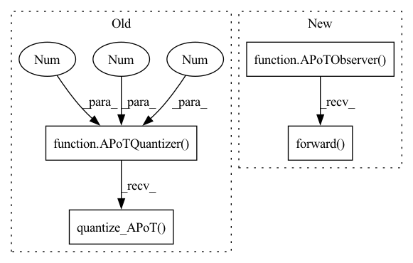

Pattern ID :6700

Before Change
// generate tensor with random fp values between 0 -> 1000
tensor2quantize = torch.tensor([0.0215, 0.1692, 0.385, 0.0391])
quantizer = APoTQuantizer(4, 2, 1.0, False)
// get apot quantized tensor result
qtensor = quantizer.quantize_APoT(tensor2quantize=tensor2quantize)
qtensor_data = torch.tensor(qtensor).type(torch.uint8)
// expected qtensor values calculated based on
// corresponding level_indices to nearest quantization level
After Change
// generate tensor with random fp values
tensor2quantize = torch.tensor([0, 0.0215, 0.1692, 0.385, 1, 0.0391])
observer = APoTObserver(b=4, k=2)
observer.forward(tensor2quantize)
qparams = observer.calculate_qparams(signed=False)
// get apot quantized tensor result
qtensor = quantize_APoT(tensor2quantize=tensor2quantize,
In pattern: SUPERPATTERN
Frequency: 3
Non-data size: 4
Instances
Fragment ID: 23015423
Project Name: pytorch/pytorch
Commit Name: 777c12f2dfd1bddbf7f04245833e3a0320bab41b
Time: 2022-06-27
Author: amandaliu@fb.com
File Name: test/quantization/core/experimental/test_quantizer.py
M Class Name: TestQuantizer
N Class Name: TestQuantizer
M Method Name: test_quantize_APoT_k2(1)
N Method Name: test_quantize_APoT_k2(1)
M Parent Class: unittest.TestCase
N Parent Class: unittest.TestCase
M File Name: test/quantization/core/experimental/test_quantizer.py
N File Name: test/quantization/core/experimental/test_quantizer.py
M Start Line: 60
M End Line: 64
N Start Line: 65
N End Line: 85
'>
Before Change
// generate tensor with random values between 0 -> 2**6 = 64
// because there are 2**b = 2**6 quantization levels total
float2apot = 64 * torch.rand(size)
quantizer = APoTQuantizer(6, 2, 1.0, False)
float2apot = float2apot.int()
orig_input = torch.clone(float2apot)
dequantized_result = quantizer.dequantize(float2apot)
quantized_result = quantizer.quantize_APoT(tensor2quantize=dequantized_result)
quantized_result = quantized_result.int()
self.assertTrue(torch.equal(quantized_result, orig_input))
After Change
def test_dequantize_quantize_rand_b6(self):
// make observer
observer = APoTObserver(12, 4)
// generate random size of tensor2quantize between 1 -> 20
size = random.randint(1, 20)
// make tensor2quantize: random fp values between 0 -> 1000
tensor2quantize = 1000 * torch.rand(size, dtype=torch.float)
observer.forward(tensor2quantize)
qparams = observer.calculate_qparams(signed=False)
// make mock apot_tensor
'>
Fragment ID: 23015421
Project Name: pytorch/pytorch
Commit Name: 777c12f2dfd1bddbf7f04245833e3a0320bab41b
Time: 2022-06-27
Author: amandaliu@fb.com
File Name: test/quantization/core/experimental/test_quantizer.py
M Class Name: TestQuantizer
N Class Name: TestQuantizer
M Method Name: test_dequantize_quantize_rand_b6(1)
N Method Name: test_dequantize_quantize_rand_b6(1)
M Parent Class: unittest.TestCase
N Parent Class: unittest.TestCase
M File Name: test/quantization/core/experimental/test_quantizer.py
N File Name: test/quantization/core/experimental/test_quantizer.py
M Start Line: 118
M End Line: 129
N Start Line: 148
N End Line: 185
'>
Before Change
// generate tensor with random values between 0 -> 2**4 = 16
// because there are 2**b = 2**4 quantization levels total
float2apot = 16 * torch.rand(size)
quantizer = APoTQuantizer(4, 2, 1.0, False)
float2apot = float2apot.int()
orig_input = torch.clone(float2apot)
dequantized_result = quantizer.dequantize(float2apot)
quantized_result = quantizer.quantize_APoT(tensor2quantize=dequantized_result)
quantized_result = quantized_result.int()
self.assertTrue(torch.equal(quantized_result, orig_input))
After Change
def test_dequantize_quantize_rand_b4(self):
// make observer
observer = APoTObserver(4, 2)
// generate random size of tensor2quantize between 1 -> 20
size = random.randint(1, 20)
// make tensor2quantize: random fp values between 0 -> 1000
tensor2quantize = 1000 * torch.rand(size, dtype=torch.float)
observer.forward(tensor2quantize)
qparams = observer.calculate_qparams(signed=False)
// make mock apot_tensor
'>
Fragment ID: 23015417
Project Name: pytorch/pytorch
Commit Name: 777c12f2dfd1bddbf7f04245833e3a0320bab41b
Time: 2022-06-27
Author: amandaliu@fb.com
File Name: test/quantization/core/experimental/test_quantizer.py
M Class Name: TestQuantizer
N Class Name: TestQuantizer
M Method Name: test_dequantize_quantize_rand_b4(1)
N Method Name: test_dequantize_quantize_rand_b4(1)
M Parent Class: unittest.TestCase
N Parent Class: unittest.TestCase
M File Name: test/quantization/core/experimental/test_quantizer.py
N File Name: test/quantization/core/experimental/test_quantizer.py
M Start Line: 90
M End Line: 101
N Start Line: 99
N End Line: 136